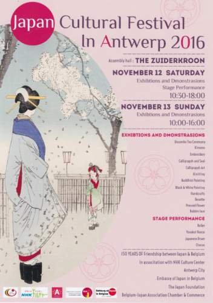
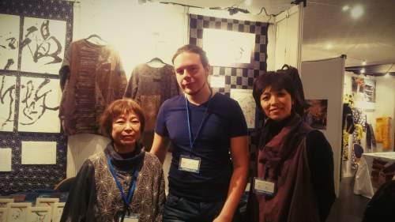
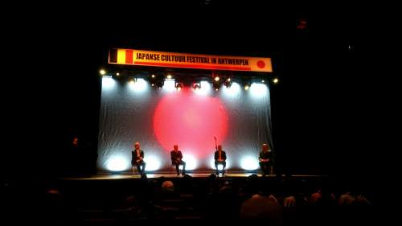
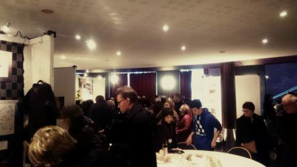

This weekend the NHK Culture Center and the Embassy of Japan in Belgium organized the 30th edition of the Japan Cultural Festival, held in Antwerp in celebration of 150 years of friendship between our two nations. Together with a few classmates and upper class students I had the honor and pleasure of joining this event’s staff of interpreter volunteers, spending my last 3 days assisting two incredible (and incredibly kind) artists convey their works to a large crowd of highly interested Japan aficionados.
The festival included a wide variety of exhibitions, demonstrations and performances related to Japanese artistry: dances, drum performances, calligraphy, clothing, tea ceremonies, etc. During the festival I was responsible for a stand on artistic calligraphy and a Japanese embroidery technique called sashiko (刺し子)2, two fields of artistry I had no prior experience in and thus learned a lot about through my interpreting those 3 days.
Interpreting as barely just a third year student was quite an experience. The amount of technical terms related to embroidery processionally made it pretty difficult to accurately translate everything in real time but I think I somehow managed to convey the overall meaning most of the time. Something that quite surprised me was how engrossed I got in my interpreting as well as the group sense we fostered. I felt a certain sense of pride every time guests complimented on our booth’s exhibitions.
Another thing that surprised me was the high interest in these art forms I originally thought maybe to be too specific to draw large crowds. Both days of the event were highly visited and left us drowned in work to the point we barely had time to eat a snack at noon. At the end everyone was exhausted, but it was definitely a good kind of exhaustion, and spending the evening together having dinner in the city center of my hometown made it all the more a pleasant memory!



-
Opening ceremony of the Culture Festival. ↩
-
Sashiko clothes are commonly made from Japanese indigo blue dyed cotton clothes embroiled with distinct patterns - https://en.wikipedia.org/wiki/Sashiko_stitching ↩